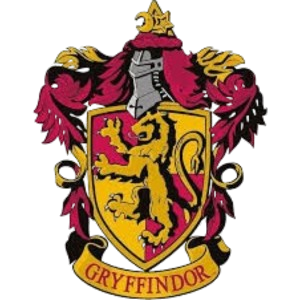
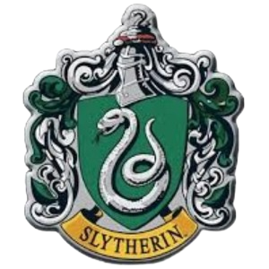
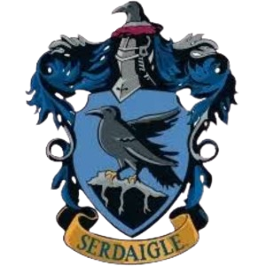
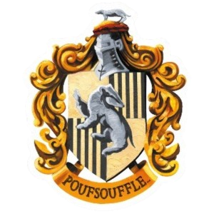

Gryffondor a été fondée par Godric Gryffondor. Ses couleurs sont le rouge et l'or et son emblème est le lion. Elle valorise le courage, la hardiesse, la force, la bravoure et la détermination. Sa salle commune est située au septième étage. Le fantôme attaché à Gryffondor est Nick Quasi-Sans-Tête. La maison compte parmi ses élèves les plus célèbres Albus Dumbledore, Celestina Moldubec, Minerva McGonagall ou encore Harry Potter.

Serpentard a été fondée par Salazar Serpentard. Son emblème, le serpent, rend hommage à ses dons de Fourchelang et ses couleurs sont le vert et l'argent. Serpentard valorise la grandeur, la ruse, l'ambition et la fierté. Sa salle commune se situe dans les cachots, sous le lac de Poudlard et son fantôme est le Baron Sanglant. Serpentard est connue pour être la maison ayant accueilli le plus grand nombre de mages noirs sur ses bancs, comme Lord Voldemort et Bellatrix Lestrange mais aussi pour avoir formé des sorciers de renom et populaires, tels que Merlin.

C'est Rowena Serdaigle qui a fondé la maison Serdaigle. Représentée par un aigle, ses couleurs sont le bleu et le bronze. L'intelligence, la sagesse, la créativité, l'originalité et la curiosité font partie des valeurs les plus importantes de cette maison, dont la salle commune est une des plus hautes tours du château de Poudlard. Son fantôme est la Dame Grise. Serdaigle compte parmi ses élèves les plus connus Ignatia Wildsmith, Perpetua Fancourt et Lorcan McLaird notamment.

Fondée par Helga Poufsouffle, Poufsouffle est représentée par un blaireau et ses couleurs sont le jaune et le noir. On trouve parmi les nombreuses qualités des Poufsouffle la loyauté, la patience, le goût du travail acharné, l'honnêteté et la tolérance. Sa salle commune, connue pour être la plus inaccessible, est située dans les sous-sols, près des cuisines. Son fantôme est le Moine Gras et Brigitte Wenlock, Artemisia Lufkin, Norbert Dragonneau font partie des élèves les plus célèbres de la maison